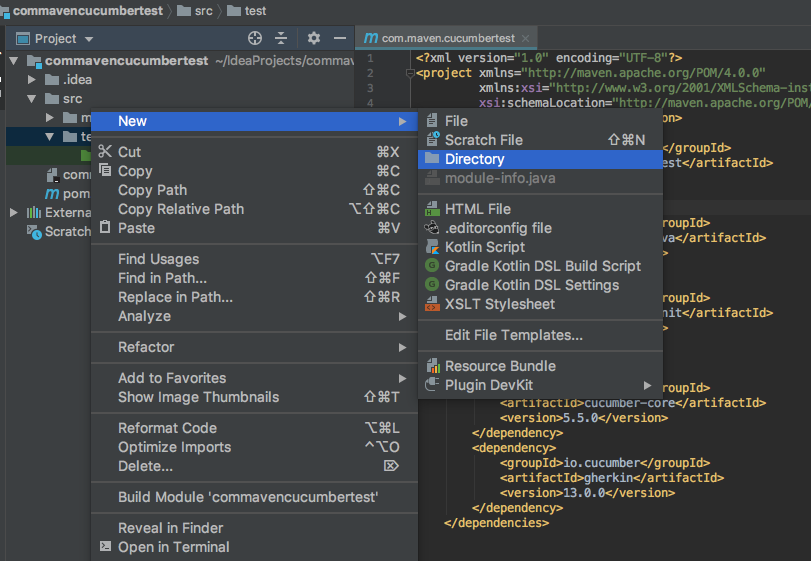
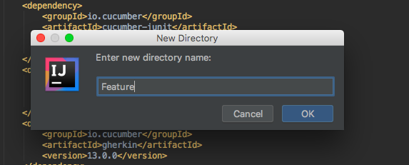
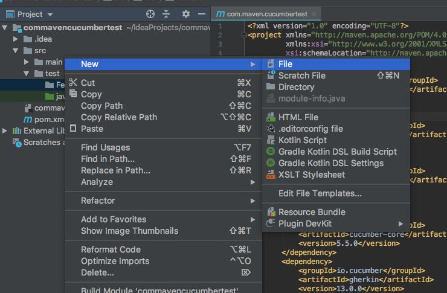
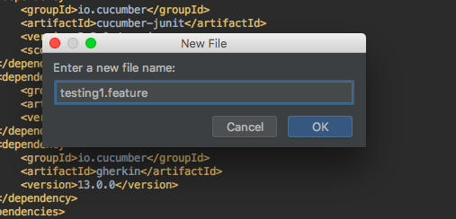
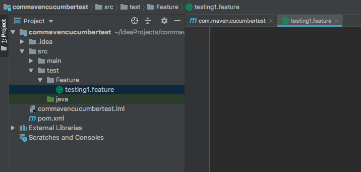
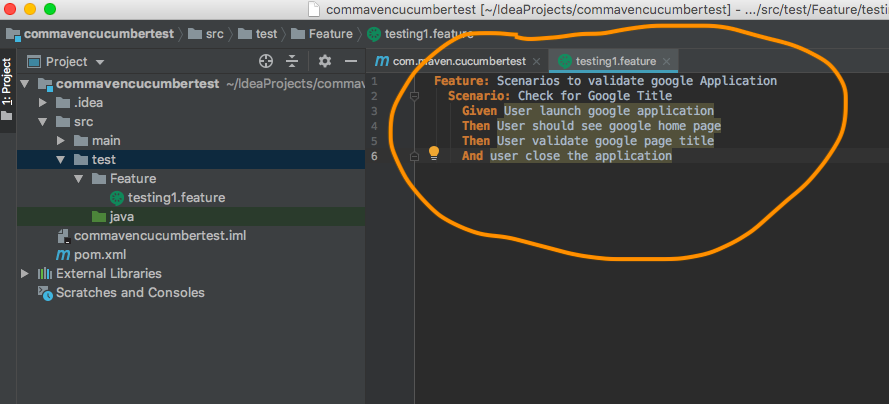

A Feature File is starting point to the Cucumber tests. This is a file where you will describe your tests in Descriptive language. Every feature file should have dot feature extension.As an example => "filename.feature".
Right click on maven test folder --> New --> Directory --> Give Directory name as Feature.
Right click on Feature folder --> New --> File --> Give file name as testing1.feature.[You can
give any file name but should have .feature extension]





# All feature files in Cucumber should have the extension .feature> in its name.
If .feature is not present, then cucumber won’t recognize it as a feature file.
# We need to add a keyword called Feature. Without this, you will see compile errors in your script.
# Each scenario in a feature file should also start with a keyword called Scenario.
A single feature file can have multiple scenarios.
# Scenarios are written starting with - Given , When ,
Then etc.
Feature: Scenarios to validate google Application Scenario: Check for Google Title Given User launch google application Then User should see google home page Then User validate google page title And user close the application
